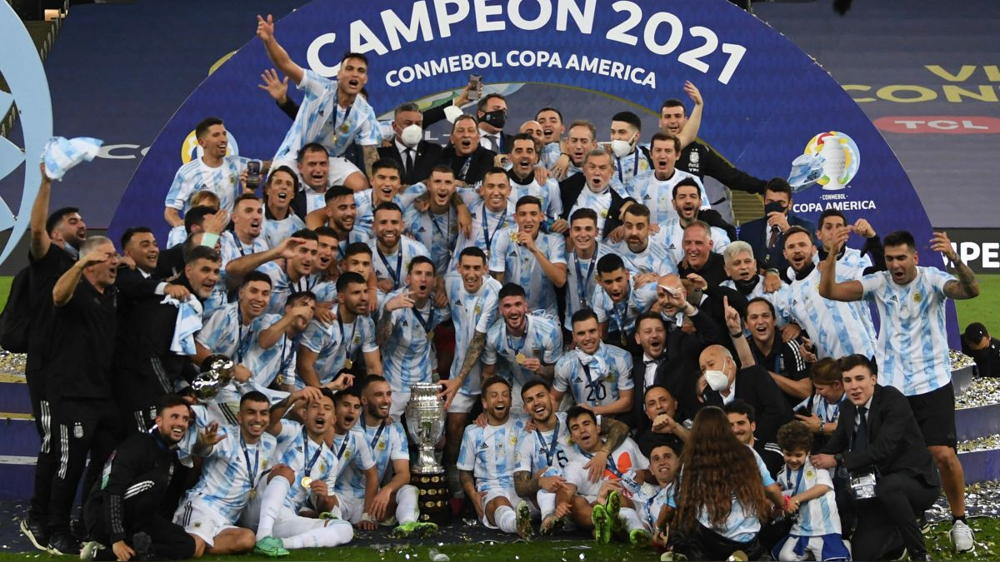
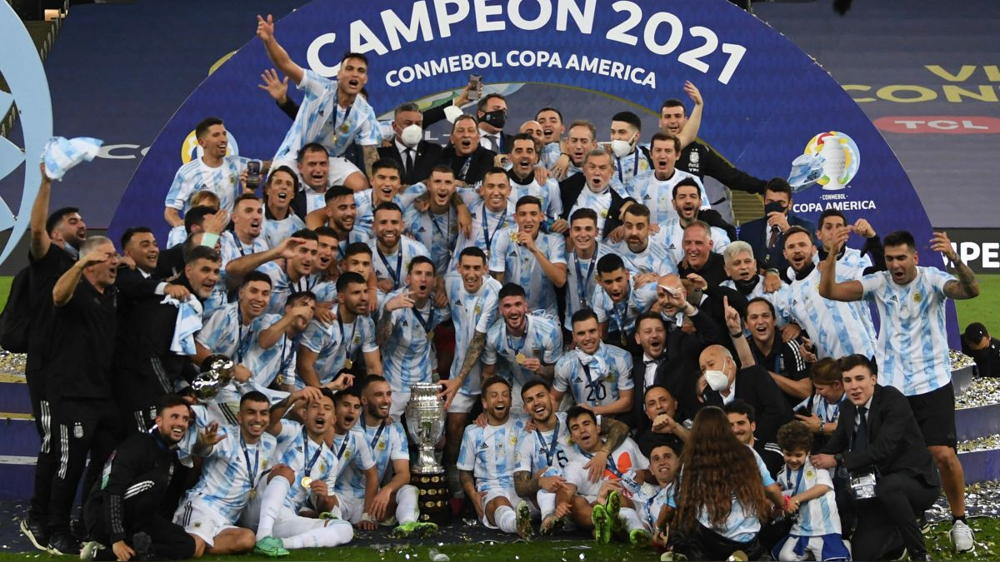
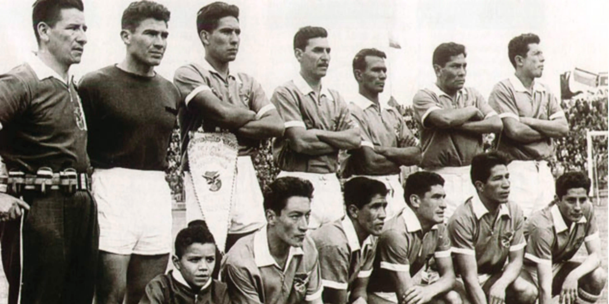
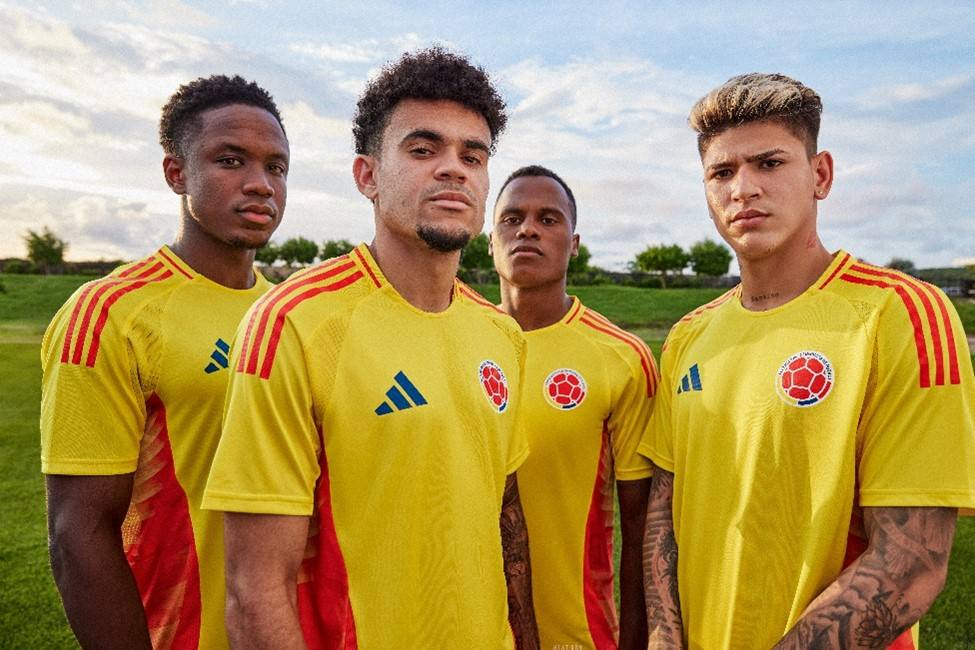
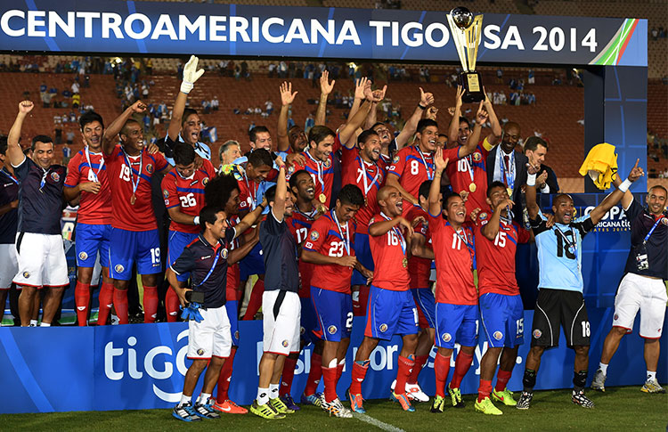
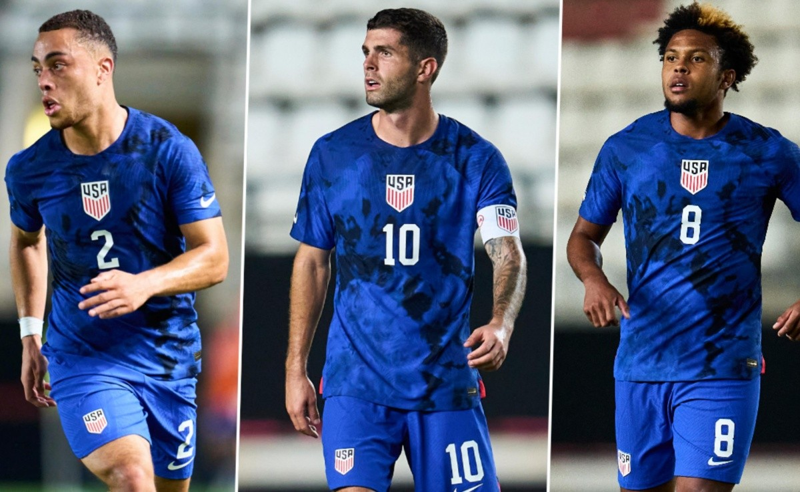
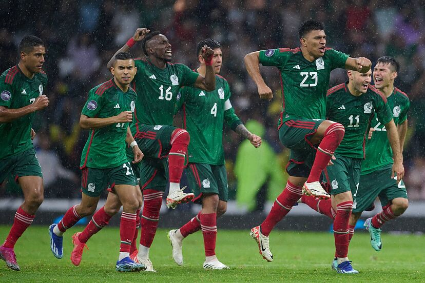
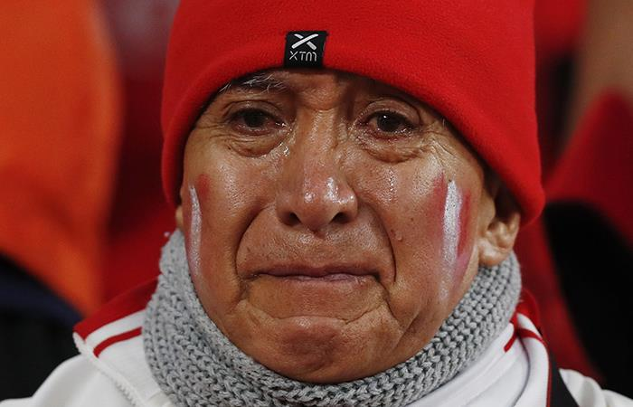
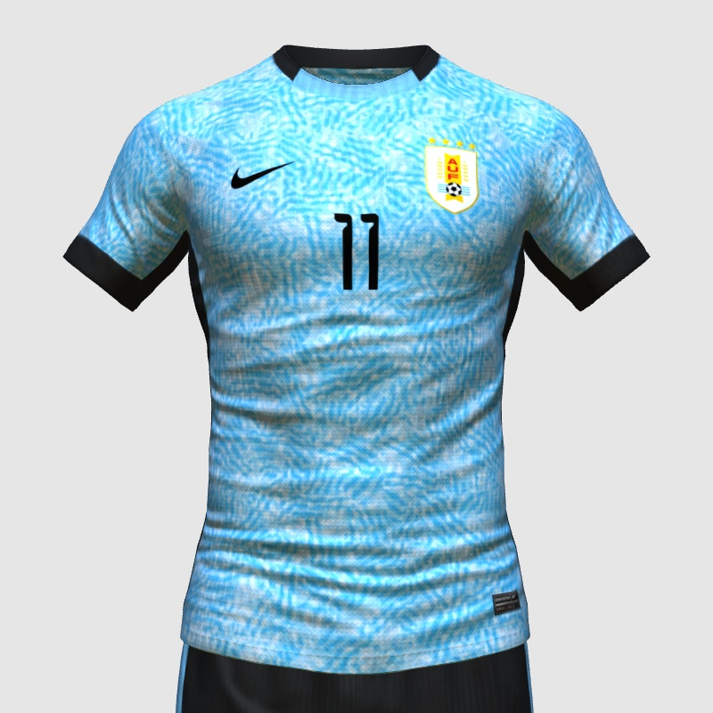

Selección Argentina
27 Mar, 2024 07:13 a.m. PE
De Lionel Messi a Franco Cervi, todos los goleadores...
Leer más27 Mar, 2024 07:13 a.m. PE
De Lionel Messi a Franco Cervi, todos los goleadores...
Leer más10 Abr, 2024 03:25 p.m. PE
HISTORIA DE LA COPA AMÉRICA (1963)...
Leer más25 Dic, 2023 03:11 p.m. PE
Brasil puede ser castigada sin jugar...
Leer más23 Mar, 2024 06:37 p.m. PE
Canadá será rival de Perú...
Leer más27 Mar, 2024 05:59 p.m. PE
Chile enfrentará a Paraguay...
Leer más12 Abr, 2024 05:15 p.m. PE
Colombia tendría nuevo rival en la Copa América...
Leer más23 Mar, 2024 08:46 p.m. PE
Costa Rica clasifica a Copa América...
Leer más09 Abr, 2024 12:54 p.m. PE
Ecuador ya tiene camiseta...
Leer más27 Feb, 2024 10:15 p.m. PE
EEUU disputará un amistoso...
Leer más12 Abr, 2024 09:56 a.m. PE
Grupo de Jamaica en Copa América 2024...
Leer más11 Abr, 2024 11:35 p.m. PE
Selección Mexicana ha tomado una decisión...
Leer más03 Abr, 2024 05:51 p.m. PE
Selección de Panamá tendrá amistoso...
Leer más10 Jun, 2021 11:00 p.m. PE
Paraguay, dos títulos y varias hazañas...
Leer más11 Abr, 2024 00:00 a.m. PE
Opciones de Perú para ganar la Copa América 2024
Leer más08 Abr, 2024 02:50 a.m. PE
Marcas que podrían vestir a la Selección de Uruguay...
Leer más05 Abr, 2024 09:11 p.m. PE
La Vinotinto enfrentaría a selección centroamericana...
Leer más